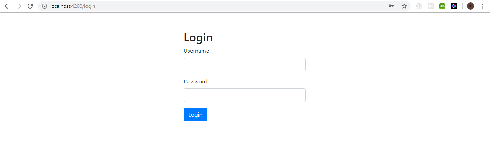
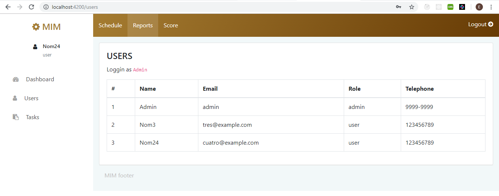

This project was generated with Angular CLI version 6.1.0. The goal is to show a strong, secure and best practices coding. We offer an example of maintainability, dependability, efficiency and usability as a Software Quality Standards. Our architecture is based in a Frontend App connecting with a RESTful API through JSON calls. This architecture keeps separate the business logic layer and data access layer from the UI (User Interface).
| Login page | Users page |
|---|---|
|  |  |
Installed previously
1.Copy the project in a folder
Get dependencies from providers. Run npm install to start download.
npm installRun ng serve from terminal. Navigate to http://localhost:4200/. The app will automatically reload if you change any of the source files.
ng serveThe project has a structure of directories opportunely designed to be friendly and very accessible for developers familiar with angular structures. However, below we show a small scheme to graph the nested folders:
src
├──app
│ ├──components
│ │ ├──contents
│ │ │ ├──footer
│ │ │ └──users
│ │ ├──header
│ │ ├──login
│ │ └──sidebar
│ ├──guards
│ ├──helpers
│ ├──models
│ └──services
├──assets
└──environments
New components must be created in the CONTENTS folder. Go to Terminal and run cd my-project/src/app/components/contents
cd my-project/src/app/components/contentsRun ng generate component component-name to generate a new component. You can also use ng generate directive/pipe/service/class/module.
ng generate component component-nameRun ng build to build the project. The build artifacts will be stored in the dist/ directory. Use the -prod flag for a production build.
ng buildGo to environmets.ts and set the API URL for DEVELOPMENT
export const environment = {
production: false,
apiURL : 'http://localhost:8000/'
};Go to environmets.prod.ts and set the API URL for PRODUCTION
export const environment = {
production: true,
apiURL : 'http://localhost:8000/'
};